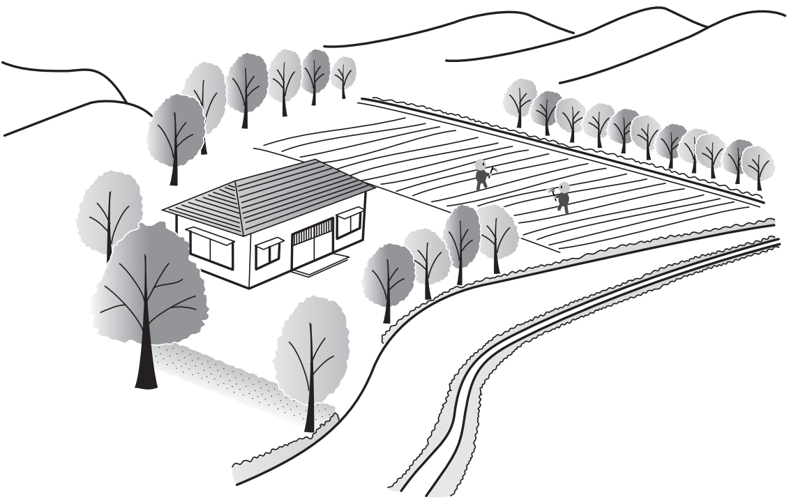
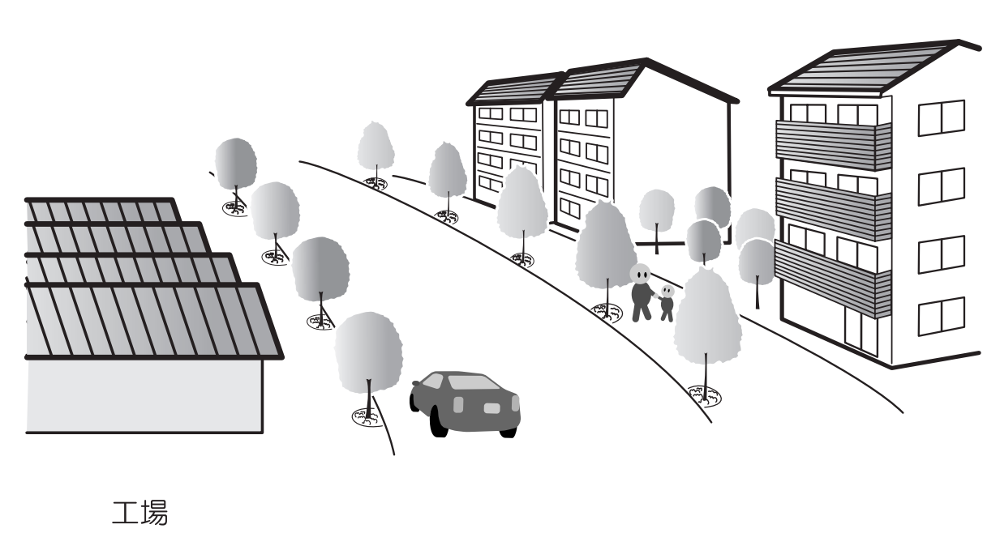

-

HOME
日野市のまちづくりマスタープランを より身近なものにし、そして、これか らの日野市を一人一人がより積極的に 考えていくためのサイトです。
-

シミュレーションしてみる
未来の日野市の成長と変化を想像し、 実際に住む環境や生活をシミュレーシ ョンしてみませんか。
-

お問い合わせフォーム
市民の皆様との協働によるまちづくり のために、些細なことでも御意見等ご ざいましたらお問い合わせください。
未来の日野市の成長と変化を想像し、 実際に住む環境や生活を シミュレーションしてみませんか。 まちづくりマスタープラン実現に向けて、 現実的にシミュレーションしてみることで、 より具体的に考えてみましょう。
里山風景が残るこの地区は、多摩丘陵の東端に位置し、 起伏に富んだ谷戸地形を形成しています。そして、丘陵地 の樹林と湧水に育まれた多様な生物が生息しています。 また、雑木林やリンゴの里、養鶏場などの都市農業がこ の地域を特徴付けており、まとまりのある集落が良好な田 園景観を形成しています。
このように谷戸景観や田園景観が残されている地区にお いては、住宅一戸の建築であっても自然の地形を活かし、 自然環境や景観に配慮した住宅となるように誘導していき ます。 そこで、まちづくりにおいても谷戸特有である自然環境 や集落環境を保全するとともに、これらと共存する低層住 宅地を形成していきます。
多様な生き物が身近に生息するこの地区は、周辺の多摩 川や日野用水などの水辺、日野緑地の崖線の緑や湧水が身 近にある自然環境が豊かに残されています。 自然環境を身近に感じ、四季の移ろいを肌で感じられる 環境は、市街化が進む中では希少になりつつあります。
しかし、まちづくりにおいてこれらの貴重な自然環境を しっかりと守り、育んでいくことで、いつまでもこの環境 の中で生活していくことが可能となります。 そこで、都市基盤の改善や住環境の向上などまちづくり を進めるなかで、自然環境を保全するとともに、これらと 共存する低層住宅地を形成していきます。
東光寺地区、西平山地区、豊田地区、川辺堀之内地区、新 井地区などは、日野市の産業と市民生活を支える農地が多く 残されている地区です。しかし、都市農業を取り巻く環境は 非常に厳しく、農地は年々減少する傾向にあります。 そこで、日野市では農業基本条例を制定し、都市農業を守 っていく方針を掲げています。
このため、まちづくりにおいても市民の食卓を彩る農作物 を生産する農地と用水、屋敷林、崖線樹林地など営農には欠 かせない環境を保全しながら、いつでも地元の新鮮な野菜が 身近で手に入る環境を形成していきます。 今後、住宅が建てられる場合には、営農環境や農村景観に 配慮した緑豊かな住宅となるように誘導していきます。
土地区画整理事業などの市街地整備により形成された住 宅地や形成されつつある住宅地では、公園やまちなかの自 然である用水、雑木林、社寺林や住宅の緑などが、子ども たちに自然と身近に触れ合える機会をつくっています。 そのため、まちづくりのなかでこれらの貴重なみどりを 保全、育成し、何世代にわたっても身近に自然の恩恵を子 どもたちに与えられる環境をつくり、緑豊かで潤いのある 住宅地となるように緑化やオープンスペースの創出を誘導 していきます。
また、丘陵部にある住宅地では、高齢化が進み、丘陵と いう地形が大きな負担になっています。住まい方は時代と ともに変化するものであり、高齢化に対応する住環境の整 備を進め、住宅地としての多様性を持たせながらリニュー アルを誘導していきます。
短冊状の細長い敷地に住宅が密集している甲州街道沿道や、 昭和３０年代に行われた民間開発による住宅地は、道路が狭く、 行き止まり道路も多いなど防災面での課題を抱えています。 しかしながら、こうした住宅地には向こう三軒両隣のコミュニ ティが今に残され、息づいていることが多く、祭りや史跡などの 記憶と文化が脈々と受け継がれています。
こうしたコミュニティを維持しながら良好な住宅地としていくた めに、市民の協力により道路用地やオープンスペースを生み出 し、狭あい道路や行き止まり道路を解消し、災害に強い住宅地 を形成していきます。 そのため、まちの姿を大きく変えることなく整備していく「小さ なまちづくり」を進め、向こう三軒両隣のコミュニティの輪のなかで、 人とのふれあいが感じられる住環境を形成していきます。
自宅から歩いて行ける距離で買い物が済んだり、鉄道やバス などの公共交通機関が利用しやすい環境は、自動車での移動が 困難な高齢者や障害者にとって、気軽に外出できる環境であり、 生活に潤いと活力を生み出す環境です。 また、都心へ通勤する人たちや駅前居住の利便性を求める人 たちにとっても、自宅の窓から多摩丘陵や多摩川、浅川といった 豊かな自然景観が楽しめる居住環境は、生活にやすらぎを与え る魅力的な環境です。
そのため、この地区では新たな日野ファンが定住する可能性 が高い地区であるといえます。 そこで、このような住環境を求める人々が、少しでも多くこの 環境を享受できるように低・中層の共同住宅を主体とし、オープ ンスペースの確保に努め、利便性と快適性のある住環境を形成 していきます。 また、駅からの商業圏のつながりを確保するため、小規模な 生活関連店舗等と複合した住環境を誘導していきます。
計画的に建設されている中高層の住宅団地は、居住者が 快適に暮らせるように関係機関と調整し、連携を取りなが ら整備を進めていきます。 また、こうした規模の大きな住宅団地は、良好な地域社 会を形成していく上で影響が大きいため、地域に開かれた 住宅団地としていくことが必要です。 そのため、建替えにあたっては、関係機関と協議しなが ら、さまざまな世代が住まうことのできる新たな社会・地 域のニーズに対応した住宅団地として再整備を進めていき ます。さらに地域に開かれたコミュニティ活動の拠点とな るような整備を働きかけていきます。
また、建替え事業の際には、低層住宅地に隣接している 住宅団地では、周辺環境に大きく負荷をかけないように配 慮し、低層住宅地と調和した住宅団地としての立地を誘導 していきます。 一方、丘陵部などに立地する住宅団地については、高齢 社会や環境負荷の軽減となるコンパクトな市街地の形成の 観点から、駅周辺市街地への立地誘導を検討します。 しかしながら、立地誘導が困難な場合には、周辺の自然 環境への影響が少なく、良好なスカイラインを有し、周辺 の住環境と調和した住宅市街地の形成に寄与するような建 替えまたはリフォームを誘導していきます。
まちづくりにおいては、居住者の利便性や快適性の向上は 大きな目的のひとつであり、基盤整備はその基本となるもの です。また、幹線道路の整備も地区の利便性の向上には欠か せないものです。 一方で、都市基盤や幹線道路が整備されると地区の様相が 一変し、それまで農地が広大な広がりを見せていた地区が市 街化され、住宅地が形成されていきます。 しかし、こうした状況にあっても地区内に残された農地は 農業基本条例の精神に従って保全、育成していくことが必要 となります。
そのため、基盤整備や幹線道路の整備などを含めた、住宅 市街地等の整備の際には、残された農地の営農環境を著しく 悪化させないように配慮していきます。 例えば、東西軸の幹線道路沿道北側については、後背部の 農地への日照等、良好な営農環境保全の観点から、南側に比 して建物高さを押さえるなど、柔軟で、きめ細かな都市計画 を行い、営農環境と調和し、交通利便性に優れた、街並みの 整った住環境の形成を図ります。
新たに地域間や都市間を連絡する役割を担う幹線道路が整 備されると、自動車交通量が適正に配分され、これまで自動車 交通が集中していた道路での交通渋滞が解消されます。そして、 道路によっては自動車交通量が極端に減少することが考えられ ます。
そのため、こうした道路ではこれまでの役割を見直し、歩い て楽しい道路環境が形成されるよう、歩行者優先道路として再 整備していくことが必要です。 また、これらの道路沿道の住宅地では、積極的に緑化を行い、 歩行者優先道路と調和した街並みとなるよう誘導し、低・中層 の緑豊かな住環境を形成していきます。
幹線道路沿道は、自動車での利便性に優れているため、そ れを多くの人が享受できるようにすることが求められます。 そのため、低・中層の共同住宅を主体としながら、集まっ て住むことの楽しさを感じることができるよう、日用品の販売 を主とする小規模な生活関連店舗等と複合した住環境を誘 導していきます。
また、この地区は、後背地の閑静な住宅地への騒音を遮断する ことや、火災時の延焼遮断帯としての防災機能が求められます。 そこで、低・中層の住宅を誘導することで建物の不燃化を 促進し、あわせて緑化による防災機能の強化をしながら、緑 豊かな沿道景観を形成していきます。 その際に、東西軸の幹線道路沿道北側の住宅地について は、後背部の住宅地への日照等、良好な住環境保全の観点 から、南側に比して建物高さを押さえるなど、柔軟で、きめ細 かな都市計画を行います。
多摩都市モノレールが整備された幹線道路沿道は、交通 利便性が非常に向上した地区です。 そのため、多様性のある地区として、居住環境や商業環 境としても発展していく可能性がある地区といえます。
そこで、個店の集積による沿道商業と住宅が調和した、 にぎわいのある低・中層の共同住宅を主体とした住環境を 形成していきます。 また、モノレールという新たな広域交通にふさわしい沿 道景観創出するため、緑豊かで街並みの整った住環境を形 成していきます。
これからも当面は続くであろう車社会への対応から、車 利用の利便性を向上させる沿道商業施設や自動車関連施設 など、沿道サービス施設の立地を許容した住環境の形成が 求められます。 そのため、沿道サービス施設が周辺の自然環境や後背地 の住宅地への日照・自動車騒音等に配慮するなど、周辺の 住宅地が調和した、緑豊かで街並みの整った低・中層の住 環境を形成していきます。
また、沿道サービス施設の立地を誘導する際には、交通 渋滞への対応や通過交通の流入規制、特に、近年問題とな っている営業時間の調整等、住民の生活のリズムや環境を 阻害しないよう、指導を行っていきます。
日野駅・豊田駅・高幡不動駅（交流拠点）周辺は、既存 の都市機能の集積や公共交通の要衝としての機能が高いこ とから、商業・業務機能の充実が求められます。また、日 野市全体として環境負荷を低減し、高齢社会を見据えたコ ンパクトなまちづくりを進めていく上で重要な役割を担っ ています。 そのため、駅前居住を推進し、多様な世代や職業の人々 が住み、働き、学び、交流する仕組みをつくっていくこと が必要です。
そこで、さまざまな建築物が建てられる土地利用を誘導 し、商業・産業のみならず、医療・福祉・教育・文化など 新たなサービス産業のビジネスチャンスの場として育成し ていきます。そして、日野の仕事を活性化させ、様々な交 流を促進するにぎわいのある地区としていきます。
交流拠点以外の駅についても、高齢化を見据え、駅前居住 を推進しながら、市民生活を支える商業店舗と居住地が近 接したコンパクトなまちづくりが求められています。 そのため、対面販売の商店街を活かした歩行者回遊型の 低・中層の店舗と住宅が共存する住環境を形成していきます。
また、既存の路線型商業店舗のある道路沿道では、車利用 を前提とした低・中層の生活密着型の商業店舗と住宅が共存 する地区を形成していきます。
住宅や工場等が混在する地区では、お互いの環境を阻害 しないように共存していくことが必要です。 企業やその工場は、まちの形成には欠かせないものであり、 また、その一方で良好な住環境を保護していくこともまちづく りにおいては大切なことです。 お互いが尊重しあい、共にあり続けるために土地区画整理 事業や地区計画制度を活用しながらまちづくりを進め、住宅 と工業の調和が取れた地区の形成を目指していきます。
また、この地区では様々な用途での土地利用が可能なため、 規模の大きな敷地での土地利用では特に周辺環境に配慮が 必要となります。 このため、周辺の住環境の土地利用や建物高さと調和する よう、地区計画によるまちづくりを進めていくことを基本的な 考え方とします。 また、比較的規模の大きい開発事業に係る土地利用転換に あっては、事業者が主体となり、街区の単位で地区計画を作 成・提案することとが望ましく、行政も積極的にこれを支援します
日野市のまちづくりマスタープランを より身近なものにし、そして、これか らの日野市を一人一人がより積極的に 考えていくためのサイトです。
未来の日野市の成長と変化を想像し、 実際に住む環境や生活をシミュレーシ ョンしてみませんか。
市民の皆様との協働によるまちづくり のために、些細なことでも御意見等ご ざいましたらお問い合わせください。